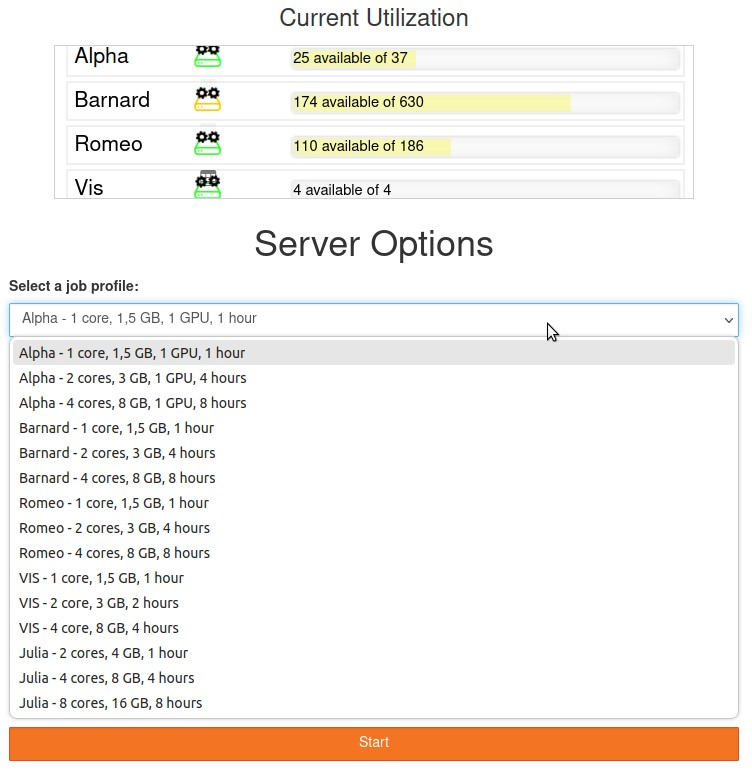
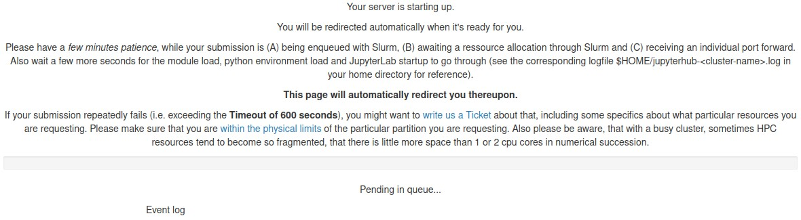

Quick Start#
This page will give new users guidance through the steps needed to submit a High Performance Computing (HPC) job:
Applying for the ZIH HPC login
Accessing the ZIH HPC systems
Transferring code/data to ZIH HPC systems
Accessing software
Running a parallel HPC job
Introductory Instructions#
The ZIH HPC systems are Linux systems (as most HPC systems). Basic Linux knowledge will be needed. Being familiar with this collection of the most important Linux commands is helpful.
To work on the ZIH HPC systems and to follow the instructions on this page as well as other compendium pages, it is important to be familiar with the basic terminology in HPC such as SSH, cluster, login node, compute node, local and shared filesystem, command line (CLI) or shell.
If you are new to HPC, we recommend visiting the introductory article about HPC at https://hpc-wiki.info/hpc/Getting_Started.
Throughout the compendium, marie@login is used as an indication of working on the ZIH HPC command
line and marie@local as working on your local machine’s command line. marie stands-in for your
username.
Obtaining Access#
A ZIH HPC login is needed to use the systems. It is different from the ZIH login (which members of the TU Dresden have), but has the same credentials. Apply for it via the HPC login application form.
Since HPC is structured in projects, there are two possibilities to work on the ZIH HPC systems:
Creating a new project
Joining an existing project: e.g. new researchers in an existing project, students in projects for teaching purposes. The details will be provided to you by the project administrator.
A HPC project on the ZIH HPC systems includes: a project directory, project group, project members (at least admin and manager), and resource quotas for compute time (CPU/GPU hours) and storage.
It is essential to grant appropriate file permissions so that newly added users can access a project appropriately.
Accessing ZIH HPC Systems#
ZIH provides five homogeneous compute systems, called clusters. These can only be accessed within the TU Dresden campus networks. Access from outside is possible by establishing a VPN connection. Each of these clusters can be accessed in the three ways described below, depending on the user’s needs and previous knowledge:
JupyterHub: browser based connection, easiest way for beginners
SSH connection (command line/terminal/console): “classical” connection, command line knowledge is required
Desktop Visualization, Graphical User Interfaces (GUIs) and similar: e.g. commercial software such as Ansys, LS-DYNA (are not covered here).
Next, the mentioned access methods are described step by step.
??? info “VPN connection”
The ZIH
[FAQ and service catalog page](https://tu-dresden.de/zih/dienste/service-katalog/arbeitsumgebung/zugang_datennetz/vpn)
provides information about how to set up the VPN connection
and solutions for most common issues.
JupyterHub#
Access JupyterHub at https://jupyterhub.hpc.tu-dresden.de.
Log in with your ZIH-login credentials.
Choose a profile (system and resources):

{: align=”center”}You will see the following - wait until resources are allocated:

Once JupyterLab is loaded, you will see all available kernels on the system you chose, categorized by
Notebook,ConsoleandOther, with which you can start right away. If you miss software packages that you wish to use, you can build your own environment and jupyter kernel. Note that you will now be working in your home directory as opposed to a specific workspace (see Data Management and Data Transfer section below for more details).
!!! caution “Stopping your Jupyter session”
Once you are done, you have to explicitly stop the Jupyter session by clicking
`File` → `Hub Control Panel` → `Stop My Server`.
Otherwise it will run for the amount of hours you chose with the spawning profile.
Logging out will not stop your server.
Explore the JupyterHub page for more information.
SSH Connection (Command Line)#
The more “classical” way to work with HPC is based on the command line. After following the instructions below, you will be on one of the login nodes. This is the starting point for many tasks such as launching jobs and doing data management.
!!! hint “Using SSH key pair”
We recommend to create an SSH key pair by following the
[instructions here](../access/ssh_login.md#before-your-first-connection).
Using an SSH key pair is beneficial for security reasons, although it is not necessary to work
with ZIH HPC systems.
=== “Windows 10 and higher/Mac/Linux users”
Windows users might need to install [Windows Terminal](https://www.microsoft.com/en-us/p/windows-terminal/9n0dx20hk701?activetab=pivot:overviewtab).
1. Open a terminal/shell/console and type in
```console
marie@local$ ssh marie@login2.barnard.hpc.tu-dresden.de
```
1. After typing in your password, you end up seeing something like the following image.

{: align="center"}
=== “Users of older versions of Windows”
Install and set up [MobaXTerm](../access/ssh_mobaxterm.md) or [PuTTY](../access/ssh_putty.md).
For more information explore the access compendium page. Configuring default parameters makes connecting more comfortable.
Data Transfer and Data Management#
First, it is shown how to allocate a workspace, then how to transfer data within and to/from the ZIH HPC system. Also keep in mind to set the file permissions when collaborating with other researchers.
Allocate a Workspace#
There are different places for storing your data on ZIH HPC systems, called Filesystems. You need to allocate a workspace for your data on one of these (see example below).
The filesystems have different properties (available space, storage time limit, permission rights). Therefore, choose the one that fits your project best. To start we recommend the Lustre filesystem horse.
!!! example “Creating a workspace on Lustre filesystem horse”
The following command allocates a workspace
```console
marie@login$ ws_allocate -F horse -r 7 -m marie@tu-dresden.de -n number_crunch -d 90
Info: creating workspace.
/data/horse/ws/marie-number_crunch
remaining extensions : 10
remaining time in days: 90
```
To explain:
- `ws_allocate` - command to allocate
- `-F horse` - on the horse filesystem
- `-r 7 -m marie@tu-dresden.de` - send a reminder to `marie@tu-dresden.de` 7 days before expiration
- `-n number_crunch` - workspace name
- `-d 90` - a life time of 90 days
The path to this workspace is `/data/horse/ws/marie-number_crunch`. You will need it when
transferring data or running jobs.
Find more information on workspaces in the compendium.
Transferring Data Within ZIH HPC Systems#
The approach depends on the data volume: up to 100 MB or above.
???+ example “cp/mv for small data (up to 100 MB)”
Use the command `cp` to copy the file `example.R` from your ZIH home directory to a workspace:
```console
marie@login$ cp /home/marie/example.R /data/horse/ws/marie-number_crunch
```
Analogously use command `mv` to move a file.
Find more examples for the `cp` command on [bropages.org](http://bropages.org/cp) or use
manual pages with `man cp`.
???+ example “dtcp/dtmv for medium to large data (above 100 MB)”
Use the command `dtcp` to copy the directory `/walrus/ws/large-dataset` from one
filesystem location to another:
```console
marie@login$ dtcp -r /walrus/ws/large-dataset /data/horse/ws/marie-number_crunch/data
```
Analogously use the command `dtmv` to move a file or folder.
More details on the [datamover](../data_transfer/datamover.md) are available in the data
transfer section.
Transferring Data To/From ZIH HPC Systems#
???+ example “scp for transferring data to ZIH HPC systems”
Copy the file `example.R` from your local machine to a workspace on the ZIH systems:
```console
marie@local$ scp /home/marie/Documents/example.R marie@dataport1.hpc.tu-dresden.de:/data/horse/ws/marie-number_crunch/
Password:
example.R 100% 312 32.2KB/s 00:00
```
Note, the target path contains `dataport1.hpc.tu-dresden.de`, which is one of the
so called [dataport nodes](../data_transfer/dataport_nodes.md) that allows for data transfer
from/to the outside.
???+ example “scp to transfer data from ZIH HPC systems to local machine”
Copy the file `results.csv` from a workspace on the ZIH HPC systems to your local machine:
```console
marie@local$ scp marie@dataport1.hpc.tu-dresden.de:/data/horse/ws/marie-number_crunch/results.csv /home/marie/Documents/
```
Feel free to explore further [examples](http://bropages.org/scp) of the `scp` command
and possibilities of the [dataport nodes](../data_transfer/dataport_nodes.md).
!!! caution “Terabytes of data”
If you are planning to move terabytes or even more from an outside machine into ZIH systems,
please contact the ZIH [HPC support](mailto:hpc-support@tu-dresden.de) in advance.
Permission Rights#
Whenever working within a collaborative environment, take care of the file permissions. Esp. after creating and transferring data, file permission configuration might be necessary.
By default, workspaces are accessible only for the user who allocated the workspace.
Files created by a user in the project directory have read-only access for other group members
by default. Therefore, the correct file permissions must be configured (using chmod
and chgrp) for all files in the project home and the workspaces that should be fully
accessible (read, write, execute) to your collaborator group.
Please refer to an overview on users and permissions
in Linux.
??? example “Checking and changing file permissions”
The following example checks for file permissions (`ls -la`) of the file dataset.csv and adds
permissions for write access for the group (`chmod g+w`).
```console
marie@login$ ls -la /data/horse/ws/marie-training-data/dataset.csv # list file permissions
-rw-r--r-- 1 marie p_number_crunch 0 12. Jan 15:11 /data/horse/ws/marie-training-data/dataset.csv
marie@login$ chmod g+w /data/horse/ws/marie-training-data/dataset.csv # add write permissions
marie@login$ ls -la /data/horse/ws/marie-training-data/dataset.csv # list file permissions again
-rw-rw-r-- 1 marie p_number_crunch 0 12. Jan 15:11 /data/horse/ws/marie-training-data/dataset.csv
```
??? hint “GUI-based data management”
- Transferring data and managing file permissions for smaller amounts of data can be handled
by SSH clients.
- More so for Linux-based systems, `sshfs` (a command-line tool for safely mounting a remote
folder from a server to a local machine) can be used to mount user home, project home or
workspaces within the local folder structure.
Data can be transferred directly with drag and drop in your local file explorer.
Moreover, this approach makes it possible to edit files with your common editors and tools on
the local machine.
- Windows users can use [SFTP Drive](https://www.nsoftware.com/sftp/drive/) utility, to mount
remote filesystems as Windows drives.
Software Environment#
The software on the ZIH HPC systems is not installed system-wide, but is provided within so-called modules. In order to use specific software you need to “load” the respective module. This modifies the current environment (so only for the current user in the current session) such that the software becomes available.
!!! note
Different clusters (HPC systems) have different software or might have different versions of
the same available software. See [software](../software/overview.md) for more details.
Use the command module spider <software> to check all available versions of a software that is
available on the one specific system you are currently on:
marie@login$ module spider Python
--------------------------------------------------------------------------------------------------------------------------------
Python:
--------------------------------------------------------------------------------------------------------------------------------
Description:
Python is a programming language that lets you work more quickly and integrate your systems more effectively.
Versions:
Python/2.7.14-foss-2018a
[...]
Python/3.8.6
Python/3.9.5-bare
Python/3.9.5
Other possible modules matches:
Biopython Boost.Python GitPython IPython PythonAnaconda flatbuffers-python netcdf4-python protobuf-python python
--------------------------------------------------------------------------------------------------------------------------------
To find other possible module matches execute:
$ module -r spider '.*Python.*'
--------------------------------------------------------------------------------------------------------------------------------
For detailed information about a specific "Python" package (including how to load the modules) use the module's full name.
Note that names that have a trailing (E) are extensions provided by other modules.
For example:
$ module spider Python/3.9.5
--------------------------------------------------------------------------------------------------------------------------------
We now see the list of available Python versions.
To get information on a specific module, use
module spider <software>/<version>:
marie@login$ module spider Python/3.9.5
--------------------------------------------------------------------------------------------------------------------------------
Python: Python/3.9.5
--------------------------------------------------------------------------------------------------------------------------------
Description:
Python is a programming language that lets you work more quickly and integrate your systems more effectively.
You will need to load all module(s) on any one of the lines below before the "Python/3.10.4" module is available to load.
GCCcore/11.3.0
This module provides the following extensions:
alabaster/0.7.12 (E), appdirs/1.4.4 (E), asn1crypto/1.4.0 (E), atomicwrites/1.4.0 (E), attrs/21.2.0 (E), Babel/2.9.1 (E), bcrypt/3.2.0 (E), bitstring/3.1.7 (E), blist/1.3.6 (E), CacheControl/0.12.6 (E), cachy/0.3.0 (E), certifi/2020.12.5 (E), cffi/1.14.5 (E), chardet/4.0.0 (E), cleo/0.8.1 (E), click/7.1.2 (E), clikit/0.6.2 (E), colorama/
[...]
Help:
Description
===========
Python is a programming language that lets you work more quickly and integrate your systems
more effectively.
More information
================
- Homepage: https://python.org/
Included extensions
===================
alabaster-0.7.12, appdirs-1.4.4, asn1crypto-1.4.0, atomicwrites-1.4.0,
attrs-21.2.0, Babel-2.9.1, bcrypt-3.2.0, bitstring-3.1.7, blist-1.3.6,
[...]
In some cases it is required to load additional modules before loading the desired software.
In the example above, it is GCCcore/11.3.0.
Load prerequisites and the desired software:
marie@login$ module load GCCcore/11.3.0 # load prerequisites
Module GCCcore/11.3.0 loaded.
marie@login$ module load Python/3.9.5 # load desired version of software
Module Python/3.9.5 and 11 dependencies loaded.
For additional information refer to the detailed documentation on modules.
!!! hint “Special hints on different software”
See also the section "Applications and Software" for more information on e.g.
[Python](../software/data_analytics_with_python.md),
[R](../software/data_analytics_with_r.md),
[Mathematica/MatLab](../software/mathematics.md), etc.
!!! hint “Tip for Python packages”
The use of [Virtual Environments](../software/python_virtual_environments.md)
(best in [workspaces](../data_lifecycle/workspaces.md)) is required if you want to install
additional Python packages with `pip`.
When using `pip install` without an activated virtual environment you will get this error:
> ERROR: Could not find an activated virtualenv (required).
Please check the module system, even for specific Python packages,
e.g. `numpy`, `tensorflow` or `pytorch`.
Those modules may provide much better performance than the packages found on PyPi
(installed via `pip`) which have to work on any system while our installation is optimized for
each ZIH system to make the best use of the specific CPUs and GPUs found here.
However the Python package ecosystem (like others) is very heterogeneous and dynamic,
with daily updates.
The central update cycle for software on ZIH HPC systems is approximately every six months.
So the software installed as modules might be a bit older.
!!! warning
When explicitely loading multiple modules you need to make sure that they are compatible.
So try to stick to modules using the same toolchain.
See the [Toolchains section](../software/modules.md#toolchains) for more information.
Running a Program/Job#
At HPC systems, computational work and resource requirements are encapsulated into so-called jobs. Since all computational resources are shared with other users, these resources need to be allocated. For managing these allocations a so-called job scheduler or a batch system is used - on ZIH systems this is Slurm. It is possible to run a job interactively (real time execution) or to submit it as a batch job (scheduled execution).
For beginners, we highly advise to run the job interactively. To do so, use the srun command
on any of the ZIH HPC clusters (systems).
For this srun command, it is possible to define options like the number of tasks (--ntasks),
number of CPUs per task (--cpus-per-task),
the amount of time you would like to keep this interactive session open (--time), memory per
CPU (--mem-per-cpu) and many others.
See Slurm documentation for more details.
marie@login$ srun --ntasks=1 --cpus-per-task=4 --time=1:00:00 --mem-per-cpu=1700 --pty bash -l #allocate 4 cores for the interactive job
marie@compute$ module load Python #load necessary packages
marie@compute$ cd /data/horse/ws/marie-number_crunch/ #go to your allocated workspace
marie@compute$ python test.py #execute your file
Hello, World!
For more information, follow the interactive jobs or the batch job documentation.